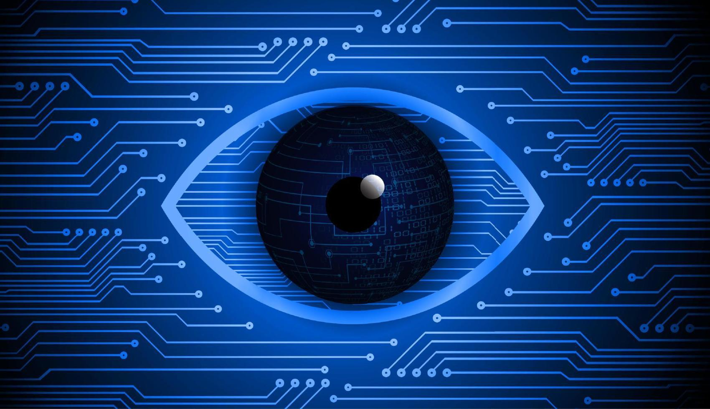

Hardware
L'hardware è realizzato in fabbrica con utilizzo di materiali fisici, come componenti elettronici e parti in plastica. È un oggetto tangibile, che
possiamo cioè toccare.
Hardware
Hardware

Scheda Madre
La scheda madre è un circuito stampato fondamentale di un moderno calcolatore elettronico che fornisce l'alloggiamento dell'unità
centrale di calcolo (CPU, Central processing unit),
le connessioni elettriche che consentono la comunicazione tra tutti i componenti del sistema e alcune interfacce per le periferiche.
schede
parte dell'hardware elettronico, realizzata generalmente in circuito stampato su supporto di vetronite o similare, di forma pseudo-rettangolare.
INPUT/OUTPUT/INPUT E OUTPUT
Gli input sono i dati che il programma riceve in ingresso mentre gli output sono i dati che il programma trasmette in uscita verso un soggetto terzo.
Anche i dati salvati su disco rigido sono output dato che vengono inviati al gestore delle periferiche che provvede a memorizzarli nella memoria magnetica.
Software
un software è un insieme di programmi, dati e istruzioni che vengono elaborati da un computer
per eseguire una specifica funzione o un insieme di funzioni. Il software è composto da codice sorgente scritto in un linguaggio di programmazione
specifico.
bios
Il BIOS è essenzialmente il programma che il microprocessore di un PC utilizza per avviare il sistema dopo l'accensione.
Inoltre, gestisce il flusso di dati tra il sistema operativo del computer e i dispositivi collegati,
come il disco rigido, l'adattatore video, la tastiera, il mouse e la stampante
Il BIOS è essenzialmente il programma che il microprocessore di un PC utilizza per avviare il sistema dopo l'accensione. Inoltre, gestisce il flusso di dati tra il sistema operativo
del computer e i dispositivi collegati, come il disco rigido, l'adattatore video, la tastiera, il mouse e la stampante.
applicazioni
Il termine applicazione in informatica individua un software installato o una serie di software in fase di esecuzione su un computer con lo scopo e il risultato di rendere possibile una o più funzionalità,
servizi o strumenti utili e selezionabili su richiesta dall'utente tramite interfaccia utente
Sistema operativo
In informatica si chiama sistema operativo quel particolare programma che fa da intermediario
tra l'utente e il computer, e al tempo stesso permette al computer di gestire più applicazioni software specifiche.